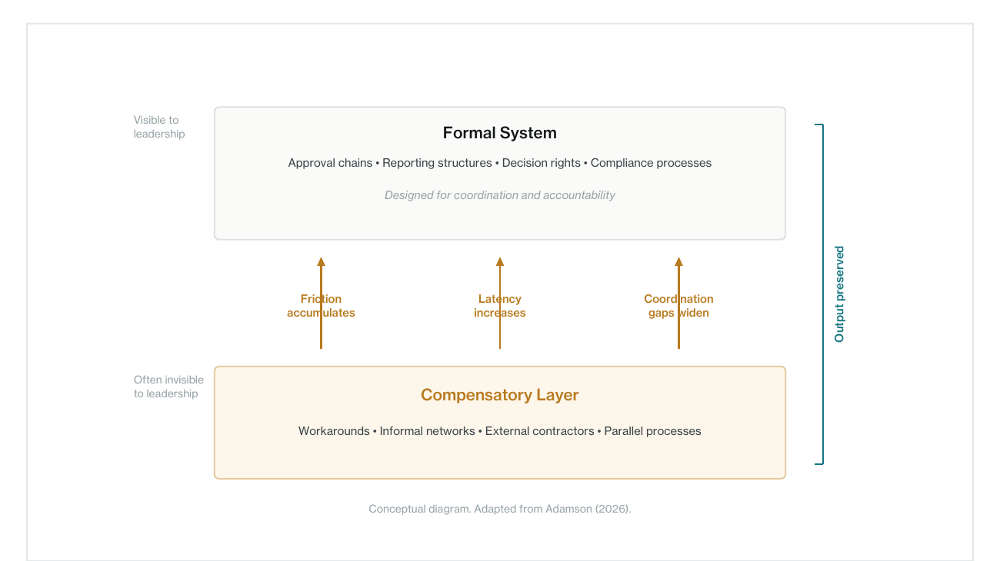
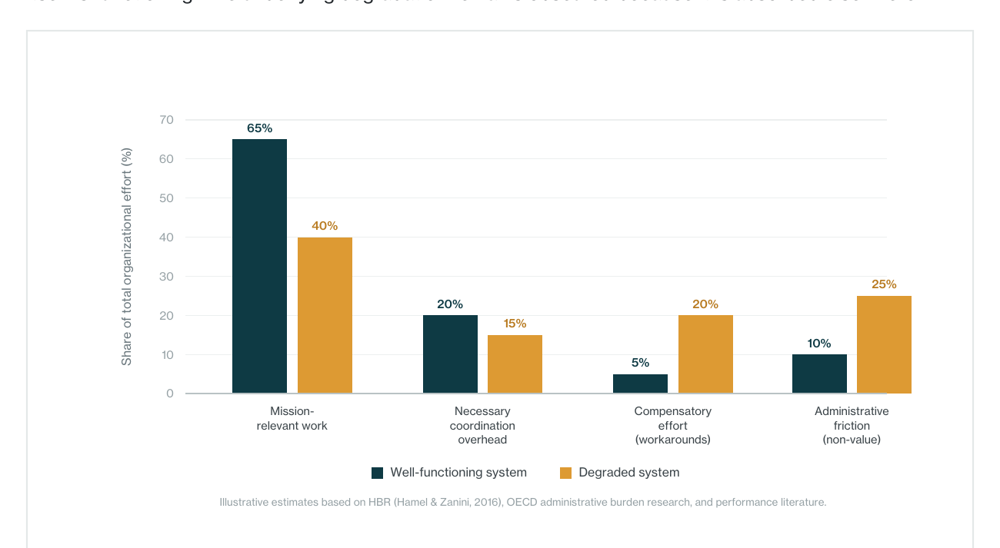
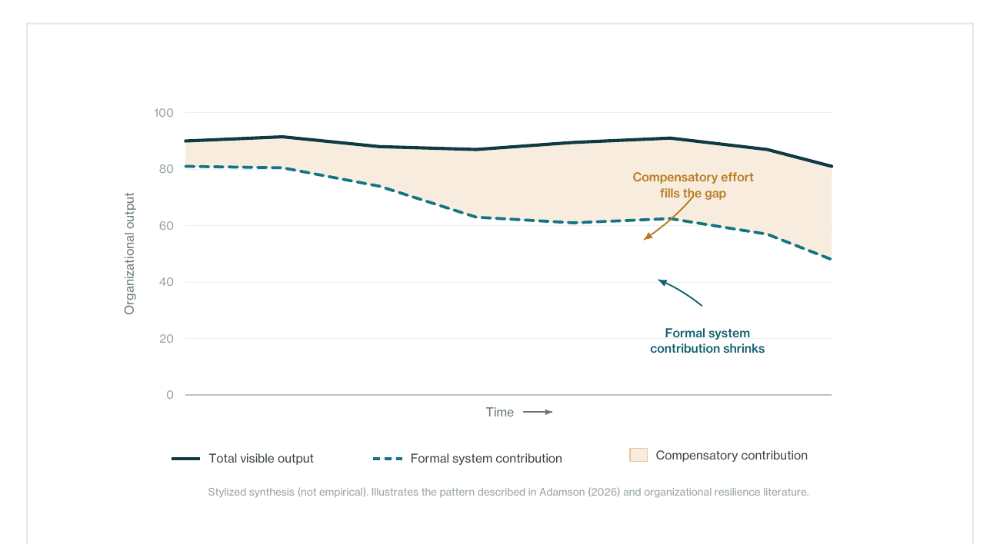
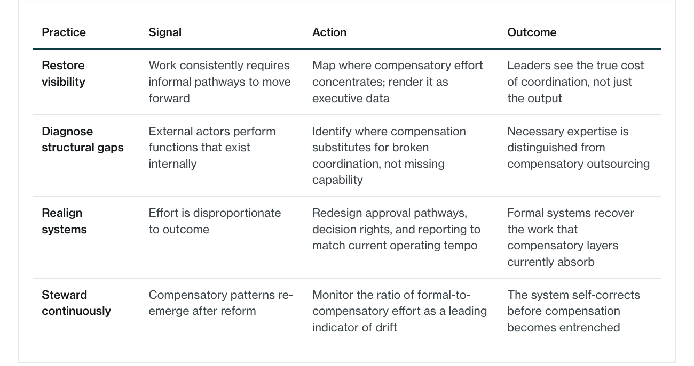

In large, complex organizations, failure rarely announces itself clearly. Systems do not stop. Work continues. Reports are produced. Decisions are made. From most vantage points, the organization appears to move forward. In such environments, the system does not stop working. It stops working as a system.
This paper examines a dynamic that is widely experienced but rarely named: the emergence of compensatory mechanisms that preserve the appearance of productive forward momentum while underlying systems degrade in their ability to coordinate, adapt, and execute. It is organized around three observations.
Compensatory systems emerge when formal systems fail to perform as designed. Teams develop workarounds, rely on informal networks, or engage external actors to bypass friction. Each response is rational. Over time, they accumulate into a secondary layer of operation that sustains output while the formal system struggles.
The presence of compensatory systems creates an illusion of productive forward momentum. Because output is preserved, leadership experiences what appears to be progress. What is less visible is the disproportionate effort required to produce it – and the extent to which it depends on mechanisms outside the formal system.
The result is what this paper calls the Stability Trap: an organization too functional to fail but too compensated to improve. Compensatory systems reduce the pressure to address underlying dysfunction. The organization stabilizes at a lower level of performance than would otherwise be possible.
The paper concludes with a diagnostic framework for treating compensatory mechanisms as signals rather than solutions – and for restoring the formal system’s capacity to produce outcomes without disproportionate hidden effort.
01.When movement is mistaken for progress
Defining productive forward momentum
Before proceeding, it is necessary to define what is meant by productive forward momentum, because much of the confusion in large institutions stems from conflating activity with progress.
Productive forward momentum is not the mere continuation of work. It is not motion, volume, or output in isolation. It is the organization’s ability to convert effort into outcomes that are timely, coherent, and aligned with intent – without requiring disproportionate workarounds, exceptions, or auxiliary systems to do so.
When that condition holds, organizations move with clarity and efficiency even under pressure. When it erodes, organizations may continue to produce outputs, but those outputs increasingly depend on hidden effort, informal coordination, and external support. The distinction is subtle. It is also decisive.
How compensatory systems emerge
All complex institutions develop forms of adaptation when formal systems fail to perform as intended. These adaptations are rarely designed at the top. They emerge organically, in response to friction encountered at the point of execution.
A team facing delays in approval pathways may begin to rely on informal relationships to move work forward. A unit encountering persistent coordination gaps may create parallel processes. Individuals confronted with procedural burden may develop workarounds that allow them to bypass constraints without formally altering them. In other cases, work that could in principle be performed internally is executed by external actors who operate with fewer constraints and greater focus.
Each response is rational. In many cases, necessary. Over time, however, these adaptations accumulate. What begins as localized problem-solving becomes a patterned response. The organization develops a secondary layer of operation – informal, external, or both – that sustains output even as the formal system struggles to do so reliably.

02.The illusion of productive forward momentum
The presence of compensatory systems produces a powerful and often misleading effect. Because work continues to move – because outputs are still produced – the organization experiences what appears to be forward progress. Deadlines are met. Missions are executed. Performance, in aggregate, appears intact.
But the character of that performance has changed. What was once achieved through coherent systems is now achieved through layered effort. What was once straightforward now requires navigation. What was once scalable becomes increasingly fragile. The organization is still moving. But it is no longer moving efficiently, and in some cases, it is no longer moving coherently.
This is the central paradox: output is preserved, but the system’s ability to produce that output is quietly degrading.
Institutional blindness and the limits of visibility
One of the reasons this dynamic persists is that it is not uniformly visible across the organization. Those closest to the work experience the friction directly – the delays, the redundancies, the informal pathways required to move even routine efforts forward. At higher levels, however, leaders see aggregated outputs, summarized metrics, and completed deliverables. They see that work is getting done. What is less visible is the effort required to produce it, and the extent to which it depends on mechanisms outside the formal system.
This creates a form of institutional blindness – not a failure of competence, but a limitation of perspective. In some cases, the system’s ability to produce output becomes evidence – incorrectly – that the system itself is functioning. The underlying degradation remains obscured because it is absorbed elsewhere.

03.The cost of compensation
External actors as compensatory mechanisms
Within this context, the role of external firms is best understood with nuance. These organizations are often highly capable. They bring expertise, focus, and executional clarity. They are not, in themselves, the source of dysfunction.
But their function within the system is frequently compensatory. They are engaged not simply because they possess unique capabilities, but because they can operate outside the constraints that limit internal execution. In many cases, what is being purchased is not capability, but the ability to execute outside the system that already possesses that capability. Their value is real, but conditional – it arises from the gap between what the organization is capable of in principle and what it can reliably execute in practice. To acknowledge this is not to criticize these firms. It is to recognize the role they are playing within a broader system. They are not the cause of the condition. They are one of its responses.
Where the costs accumulate
The reliance on compensatory systems carries costs rarely captured in formal accounting. These extend beyond financial expenditures to time, attention, and institutional capacity. Studies of administrative burden suggest that 20 to 30 percent of total labor effort in complex organizations is consumed by coordination overhead: approvals, reporting, compliance, and process navigation. In well-functioning systems, a portion of this is necessary. In degraded systems, it increases without corresponding value.
At scale, the implications are substantial. An organization with 50,000 personnel may see the equivalent of 10,000 to 15,000 full-time roles absorbed by administrative burden beyond what is operationally necessary. In practical terms, this often manifests as decisions that take weeks instead of days, coordination that requires multiple layers of follow-up, and initiatives that stall not for lack of capability but for lack of clear pathways. Financially, external compensatory mechanisms command premium rates relative to internal capacity and introduce duplication: the organization pays both to maintain its internal capability and to supplement it externally. The financial cost is measurable. The loss of time, initiative, and adaptability is harder to quantify – but often more consequential.
The more significant cost, however, is less visible. It is the gradual erosion of the organization’s ability to perform its own functions without assistance.
04.The Stability Trap
Taken together, these dynamics produce a system that is remarkably stable – but not necessarily effective. It does not fail catastrophically. It continues to operate. It adapts. It absorbs strain. But it does so in a way that stabilizes at a lower level of performance than would otherwise be possible.
The presence of compensatory systems reduces the pressure to address underlying issues. Because work continues, the urgency of reform diminishes. Because outputs are preserved, the system appears viable. Over time, this creates what this paper calls the Stability Trap: the organization becomes too functional to fail, but too compensated to improve.

05.From compensation to stewardship
The existence of compensatory systems is not, in itself, a problem. In complex environments, some degree of adaptation is inevitable and often desirable. The issue arises when compensation becomes a substitute for stewardship – when workarounds, external support, and informal systems are treated as solutions rather than signals.
A different approach begins by treating these mechanisms as diagnostic. Where work consistently requires informal pathways, there is likely a structural issue. Where external actors perform functions that exist internally, there is likely a coordination gap. Where effort is disproportionate to outcome, there is likely misalignment in the system itself. To see these patterns clearly is not to assign blame. It is to restore visibility.

Restore visibility by mapping where compensatory effort concentrates and rendering it as executive data. Leaders cannot steward what they cannot see.
Diagnose structural gaps by distinguishing where external actors provide necessary expertise from where they are substituting for broken internal coordination.
Realign systems by redesigning approval pathways, decision rights, and reporting structures to match the organization’s current operating tempo – so the formal system recovers the work that compensatory layers currently absorb.
Steward continuously by monitoring the ratio of formal-to-compensatory effort as a leading indicator of institutional drift. When that ratio shifts, it is an early warning – not a crisis, but a signal that structure is falling behind mission.
06.Conclusion: the difference between movement and progress
Organizations of scale will always exhibit some degree of friction. They will always require coordination, structure, and control. The presence of bureaucracy is not the issue. The issue is whether that bureaucracy remains aligned with purpose – or whether it accumulates to the point that it begins to obscure it.
Compensatory systems allow organizations to continue functioning when that alignment degrades. They are, in many ways, a testament to resilience. But they are not a substitute for coherence.
The distinction between movement and progress ultimately comes down to this: whether the system itself is capable of producing outcomes – or whether those outcomes increasingly depend on mechanisms outside of it. When the latter becomes true, the organization is no longer simply operating under complexity. It is operating through compensation.
And until that condition is named, measured, and addressed, the organization will continue to move – but increasingly through effort, rather than through design. This is the Stability Trap: an institution that remains too functional to fail but too compensated to improve, mistaking the persistence of output for the health of the system that produces it. The work of institutional stewardship begins where compensatory systems end: with the willingness to see that distinction clearly.